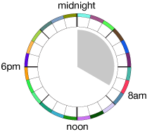
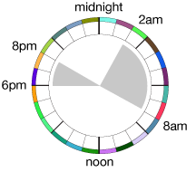
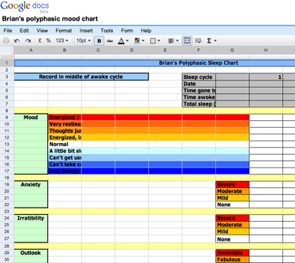
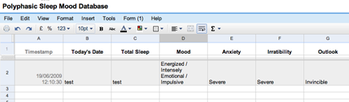
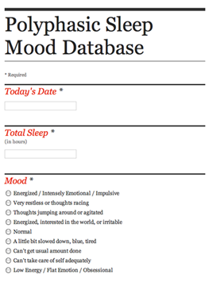

This July, I am going to experiment with adapting my sleep patterns into a Polyphasic Sleep cycle. That’s just a fancy way of saying sleeping more than once in a single day. Most of us choose a single long period of sleep durning the night, around about 7–8 hours to let the body rest and recuperate, but there are other options.
Polyphasic sleep comes in several flavors, the most common is biphasic sleep. This means that your normal sleep pattern is split into two sleep periods. The siesta is a common example of this, an afternoon nap and then stay-up later in the evening. To start out with, I am going to attempt to do something similar and hopefully move into other more complex patterns.
The basis for this is to increase the time available to conduct other tasks. Spending 1/3 of the day sleeping is not the most efficient, if it is possible to hack sleep so the body can completely rejuvenate and still have more awake time, why not try it?
I am planning my day around a biphasic sleep schedule, two sessions, one 6 hours and a second shorter 2 hours. This would allow for a normal 8 hours total sleep, but be broken into two parts too acclimate the body. The next phase of the experiment is to slowly decrease the larger block’s sleep length from 6 hours to only 4 hours, keeping the 2 hour nap. This would be a total of 6 hours of sleep per day which is an 8.3% increase in awake time, equating to 14 extra hours a week. The plan is to wake-up at 8am for work and return home around 6–7pm for dinner. Around 7–9pm I would take my second sleep, then stay awake until 4am, when I will return to sleep for 4 hours and awake again at 8am for work. That’s the plan, a mere 6 hours total.
Six hours of sleep isn’t that spectacular, people do this now, but this would be a sustained sleep pattern, not something you do for a few days before the big deadline.
Right now is the best possible time to conduct this experiment. In Iceland, the amount of daylight during the summer months is extremely long, almost 24 hours. So being awake at the wee hours of the morn won’t have such a depressing impact since it will be just as sunny out at 3am as it is at 10am.
It is said that Buckminster Fuller participated in polyphasic sleep. He would take a 30 minute nap every 6 hours, but then again, this was a man kept several watches ticking for various time zones because he travelled so much. Rather than try and compensate for jet lag, he simply ran his life on 6 hour intervals. Another variation of this is sleeping 20 minutes every 4 hours. Between work and a regular social life, for me these weren’t as feasible.
For a bit more background information, the radio show Radiolab had an episode dedicated specifically to sleep. In it, they explore dreams, sleep deprivation and plenty of other sleep related topics. There has been a lot of very interesting research on this topic and hopefully I can contribute in some small way.
Goals
There are two main goals for this experiment, the first is to attempt to get more time in my day to take care of tasks. Much of my work is done online with people several time zones ahead and behind me. Simply being online to collaborate in more real-time would be helpful, not to mention having more hours in the day to complete the tasks. Moving to a polyphasic sleep cycle increases the amount of awake time without sacrificing time for the body to recover. Moving to a crazy multi-sleep pattern which interferes with daily activities to gain 1 hour extra working time does not seem worth it. At the moment, the proposed regime will gain me 2 extra working hours with minimal daily disruption. Without testing, this seems to be an antiquate trade-off.
The second goal of this experiment is curiosity. Is it possible to hack your sleep? For animals it is more common to take a series of short naps rather than a single long period of sleep. Giraffes take hundreds of micro-sleep naps a day. If they were to sleep for an 8 hour period, they’d be someone’s breakfast! Dolphins, whales and other sea mammals are unable to shutdown for extended periods of time because they need to surface to to refill their lungs. An 8 hour sleep is impossible for them, so how come humans have moved to this schedule? Is it a byproduct of the Industrial Revolution? Clock-in, clock-out! Did hunter gatherers take naps or did they condense their sleep to a single period while it was dark. If it is not possible to hunt at night, why not use the downtime to rest?
Concerns
A few friends whom I told about this project are doctors and/or work in the medical field. They had their concerns about me getting only 2 hours of sleep a day. They convinced me not to attempt the 20 minutes every 4 hours, but to start with something not so radical. We talked it over, weighted the pros and cons and settled on the 4-and-2 plan. Somehow I get the feeling that they are more excited to see how I turn out, a willing guinea pig blindly following their advice. I certainly don’t want to cause any harm, mental or physical, to myself, nor do they, so for starters we are taking the less extreme biphasic sleep and monitoring my progress.
We are monitoring my health similar to other medical trials. Patients get a “mood chart” which tracks various aspects of their emotional lives. This helps doctors to see if the prescribed drugs are effecting the patient’s behaviour. Sleep deprivation would have similar “moody” side-effects, so we set-up a similar system, tweaking it to the needs of this experiment.
Having my medical advisors dispersed around the world, I needed a way for them to check-up on my situation and a way for me to easily record the data. We settled on the simple solution of an online spread-sheet which could be edited and viewed by everyone involved. The first draft was basically a replication of the paper document given to clinical trial patients.
It is designed to track mood, anxiety, irritability and outlook along with the amount of sleep for each day. This is ideally recorded at the same time each day, we decided to do this mid-day so the results could be equally compared to each other and my assessment of myself was consistent for the previous 24 hours.
Being a proper Informatician, I gutted the document and converted it to a database so it could easily be searched, sorted and graphed. Google Docs has a great feature inwhich you can convert spread-sheet columns into survey questions. It automatically creates a public or private survey online that anyone can fill out. The results of which are automatically saved into the spread-sheet as a new row. This is exactly what we needed, a simple way for me to input data via a form without being able to see previous submissions. By not being able to see what happened yesterday, it would limit my bias in describing today’s situation.
A few weeks before the experiment I began to collect base-line data about my mood and personality while getting a full 8 hours of sleep. As I move to less sleep, will my mood change drastically from the mean or will it continue as normal? Without this base-line data we wouldn’t know what is “normal”.
I also lobbied for two additional fields to be added to the survey. These were “major event in the day” and “divergence from normal diet”. In my research, I have read that people who are getting less sleep are craving unusual foods. They attribute this to a change in vitamin production in the body. Therefore, the body craves foods you don’t normally eat to make-up for the deficiencies. So I wanted to see if this happens to me, if it does, it might be possible to find out what and why I might be craving those foods and offset it with vitamin supplements or simply have those foods on hand to prevent the cravings.
The other item, “Major event in the day” was added so it might better explain the mood. I might be running on very little sleep, be cranky and moody, but feel like a million bucks because I received excellent news. Having this documented might help explain any outliers in the data.
Results
I have been advised that if I begin to hallucinate to stop and get some rest, but otherwise my progress will be independently tracked online by friends as well as the people I meet and see on a daily basis. If I become irritable and polyphasic sleep is not working, they will certainly let me know. I want to keep this up for a minimum of 1 week. I am assuming it will take a few days to let my body adjust into the new system, so I need to stick it out. I know the first few days migrating to the new sleep patterns will be difficult and I will document the progress. When the experiment has concluded or is running successfully, I will write a follow-up article which will contain parts of my daily journal, a downloadable mood chart, some thoughts on the experiment and advice to others who might be interested in attempting polyphasic sleep.